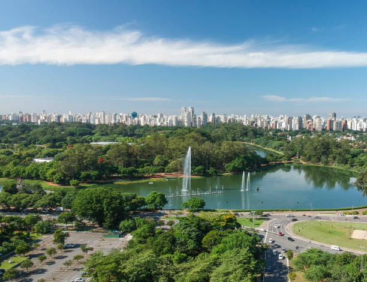

Parques de São Paulo
Você está em: Home | Parques
Parque do Ibirapuera
O parque do ibirapuera é um parque urbano em São Paulo, que ocupa uma área de 158 hectares com três lagos artificiais interligados. O parque foi inaugurado em 1954 para comemorar o quarto centenário da cidade e possui diversas atrações culturais e de lazer, como museus, planetário, auditório, pavilhão japonês, monumentos e áreas verdes. O parque é um dos mais visitados da cidade e recebe cerca de 15 milhões de visitantes por ano. O parque tem uma rica biodiversidade, com mais de 500 espécies de plantas e 350 espécies de animais. O parque também é um espaço para a prática de esportes, como ciclismo, corrida, caminhada, ioga e artes marciais. O parque é administrado pela Urbia Parques desde 2020, por meio de uma concessão pública de 35 anos.
O que tem no parque ?
- Jardim das Esculturas
- MAM - Museu de Arte Moderna
- MAC - Museu de Arte Contemporânea
- Planetário

Jardim Botânico
O Jardim Botânico de São Paulo foi fundado em 1928 e conta com 143 hectares de área verde e várias espécies vegetais. O Instituto de Botânica dispõe de uma biblioteca com cerca de 6.400 livros, um privilegiado acervo botânico e está localizado na região da Água Funda, na cidade de São Paulo.
O que tem no parque
- Museu Botânico
- Duas estufas com plantas da Mata Atlântica
- Jardim de Lineu
- O portão histórico de 1894
- O marco das nascentes do riacho Ipiranga
- Lago das ninféias

Parque Alfredo Volpi
O Parque Alfredo Volpi é um parque urbano localizado no bairro do Morumbi, na zona oeste de São Paulo. O parque foi fundado na década de 1970 e ocupa uma área de 142 mil metros quadrados, onde se preserva um remanescente de Mata Atlântica com diversas espécies de plantas e animais. O parque recebe o nome de Alfredo Volpi, um dos mais conceituados pintores brasileiros da segunda geração do modernismo.
O que tem no parque
- Trilhas para caminhadas
- Três lagos de diferentes níveis, alimentados por uma nascente natural
- Aparelhos de ginástica
- Playground
- Praças de piquenique

Parque Buenos Aires
O Parque Buenos Aires é um parque público localizado no bairro de Higienópolis, na região central de São Paulo. O parque foi inaugurado em 1916 e tem uma área de 22,2 mil metros quadrados, com muitas árvores, flores e bancos. O parque é frequentado por moradores da região, que aproveitam o espaço para caminhar, correr, andar de bicicleta, brincar com crianças e animais de estimação, ou simplesmente relaxar. O parque é cercado por grades e tem segurança 24 horas.
O que tem no parque
- Biblioteca infantil
- Academia ao ar livrel
- Pista de skate
- Playground

Parque da Indeprendência
O Parque da Independência é um parque público localizado no bairro do Ipiranga, na zona sudeste de São Paulo. O parque é um marco histórico nacional, pois foi ali que D. Pedro I declarou a independência do Brasil em 1822. Além das atrações, o parque também tem um jardim em estilo francês, um bosque com espécies nativas, uma praça para eventos, uma pista de cooper, um playground e um chafarizO parque é administrado pela Prefeitura de São Paulo.
O que tem no parque
- Museu do Ipiranga
- Monumento à Independência
- Casa do Grito
- Cripta Imperial, onde estão os restos mortais de D. Pedro I e suas esposas